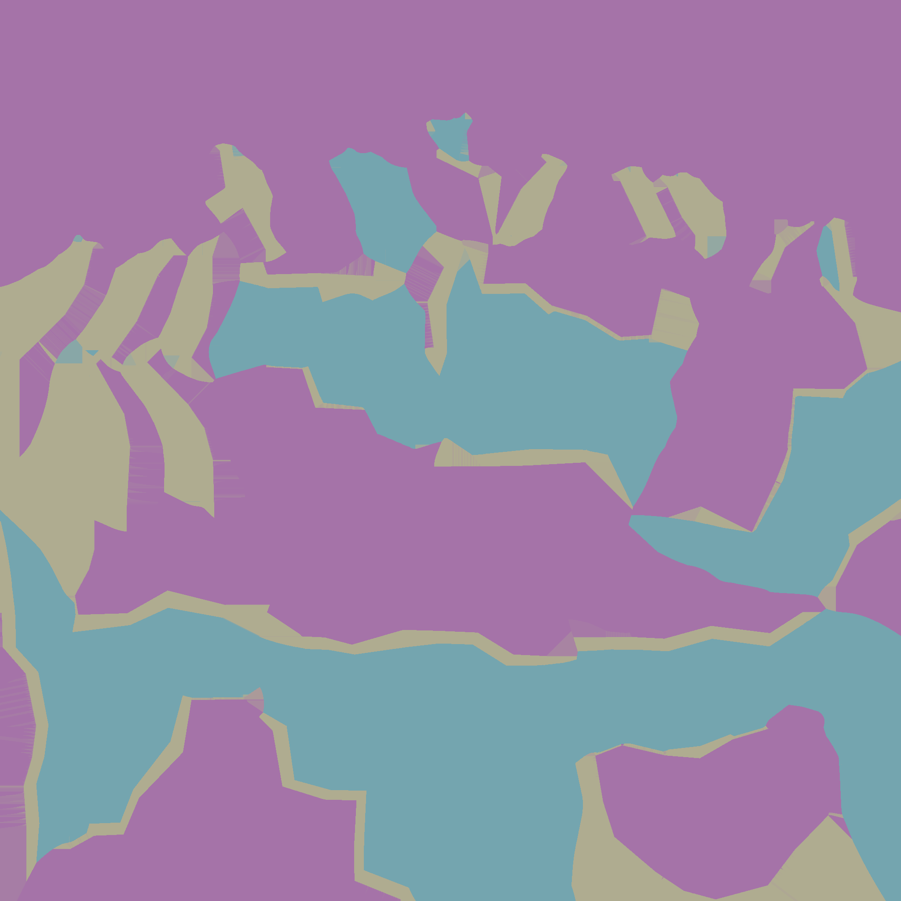
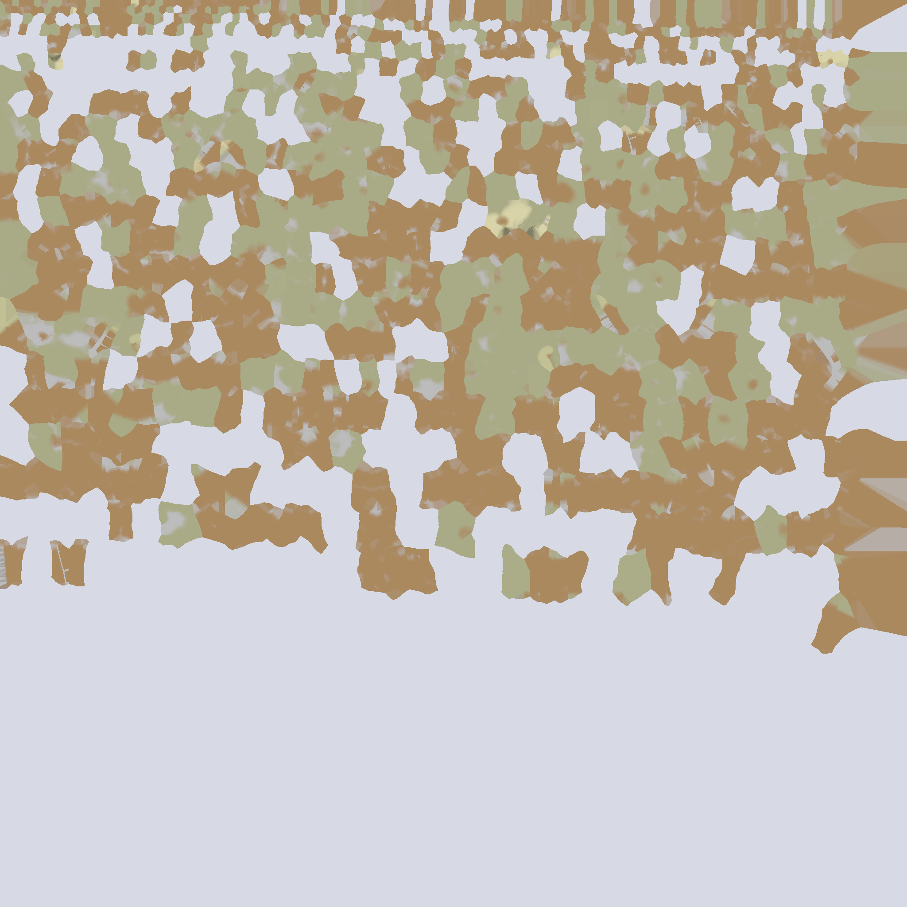

 
CSCI-510: Final Exam Image
Your browser does not support the HTML5 canvas element.
Controls
x, y, z
Rotate planet forward about the x, y, or z axis
X, Y, Z
Rotate planet backward about the x, y, or z axis
1, 2, 3
Select the texture
r, R
Reset to default position